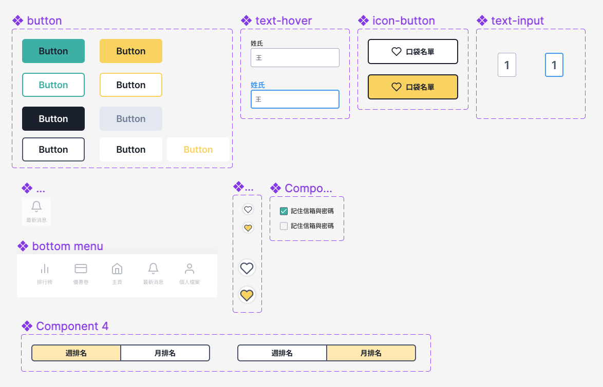
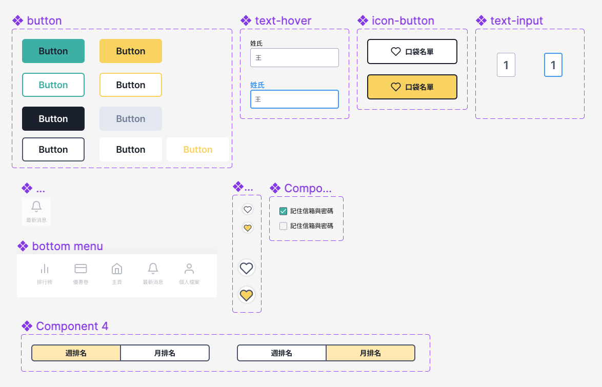

Walk to Win: Gamifying Pedestrian Life on Longtan Road
In Yunlin County's Douliu City, Longtan Road serves as a crucial transportation hub, but the persistent issue of chaotic street traffic has been a concern for pedestrians. To address this problem, my team and I developed an app to optimize the traffic conditions on Longtan Road.
Overview
Goals
- Identified traffic issues and their sources on Longtan Road.
- Implemented solutions to improve traffic conditions on Longtan Road.
- Provided long-term solutions for sustainable improvement.
Core Team
Three students from National Yunlin University of Science & Technology Department of Cultural Heritage Conservation and Department of Creative Design.
My Role
- UX/UI Design
- Research and Synthesis
- Prototype
Background
Longtan Road, known for its food stalls and heavy traffic, experiences significant congestion—especially during school rush hours—due to an over-reliance on motorcycles. Our project addresses this by promoting walking as a viable and rewarding alternative.
The Longtan Walker Pace Counter APP is a mobile solution designed to gamify pedestrian movement, encouraging students and residents to choose walking over driving for short distances.
Problem Statement
Surveys and observational studies revealed that over 70% of students in the Longtan area commute via motorcycle, despite the walkability of the region.
This leads to:
- Increased congestion
- Safety concerns for pedestrians
- Noise and air pollution
- Diminished local business engagement due to inaccessible foot traffic

Target Users
- High school and university students in the Longtan area
- Local residents
- Small business owners along Longtan Road
Investigate Finding
The Interview Record
Our team conducted interviews with street vendors, pedestrians, and shop owners, and compiled a list of issues along Longtan Road.
Traffic Issues Caused by Motorcycles
Through street interviews with students and businesses on Longtan Road, we found that traffic issues arise during mealtimes due to congestion, poor air quality, limited parking, and safety concerns, mainly caused by the high number of motorcycles. To alleviate these problems, reducing the number of motorcycles on Longtan Road is crucial.

Solution
Walk More, Save More!
To reduce the number of motorcycles on the road, we propose that students switch to walking on Longtan Road. To incentivize this change, we suggest offering discounts through a step-counting system. Students can accumulate steps to exchange for food discount vouchers, benefiting both students and businesses. This approach aims to address traffic issues successfully.
The Design of Longtan Walker Pace Counter APP
An app specialized in encouraging users to Walk More and Save More!
By using this app, we can not only address the traffic issues in Longtan but also create a healthier lifestyle for everyone.
Longtan Walker Design Details
 


Motivational, Innovative, & Health-focused
Increase User Physical Activity
Through a pedometer, users can track their daily step count, converting these steps into monetary values. The main page displays daily steps, accumulated amounts, and a trend chart.
Competition Mode
Weekly and monthly step count rankings encourage users to actively participate, boosting their motivation for physical activity.
Reward Redemption
Establishments along Longtan Road offer discounts on food and beverages, and users can redeem these products using the accumulated monetary values from their step counts.
Longtan Walker Pace Counter APP Figma Prototype
Personal Growth
- Acquired knowledge on using methods such as field research and interviews to understand user needs.
- Learned to create a UI kit and gained an understanding of prototyping to showcase project outcomes.